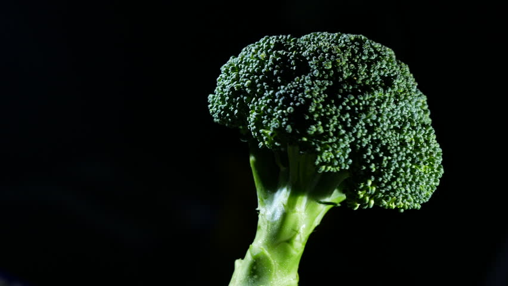

Broccoli

- Broccoli is a green vegetable that vaguely resembles a miniature tree. It belongs to the plant species known as Brassica oleracea.
- It’s closely related to cabbage, Brussels sprouts, kale and cauliflower — all edible plants collectively referred to as cruciferous vegetables.
- One of broccoli’s biggest advantages is its nutrient content. It’s loaded with a wide array of vitamins, minerals, fiber and other bioactive compounds.
- The antioxidant content of broccoli may be one of its main boons for human health. Antioxidants are molecules that inhibit or neutralize cell damage caused by free radicals. This can lead to reduced inflammation and an overall health-protective effect.
- Broccoli has high levels of glucoraphanin, a compound that is converted into a potent antioxidant called sulforaphane during digestion.
- Test-tube and animal studies indicate that sulforaphane may offer multiple health benefits, including reduced blood sugar, cholesterol levels, oxidative stress and chronic disease development.
- Broccoli also contains measurable amounts of the antioxidants lutein and zeaxanthin, which may prevent oxidative stress and cellular damage in your eyes.
- Broccoli contains various bioactive compounds that have been shown to reduce inflammation in your body’s tissues. It’s theorized that multiple compounds work synergistically to support this effect, though some seem to work individually as well.
- A small human study in tobacco smokers also revealed that eating broccoli led to a significant reduction in markers of inflammation.
- Cruciferous vegetables, such as broccoli, contain various bioactive compounds that may reduce cell damage caused by certain chronic diseases.
- Eating broccoli may support better blood sugar control in people with diabetes. Although the exact mechanism is unknown, it may be related to broccoli’s antioxidant content.
- Some of the nutrients and bioactive compounds in broccoli may slow mental decline and support healthy brain and nervous tissue function. A study in 960 older adults revealed that one serving per day of dark green vegetables, such as broccoli, may help resist mental decline associated with aging.